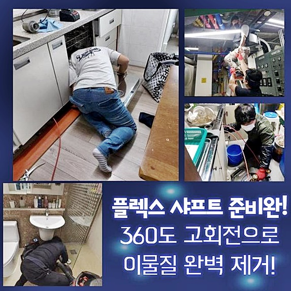
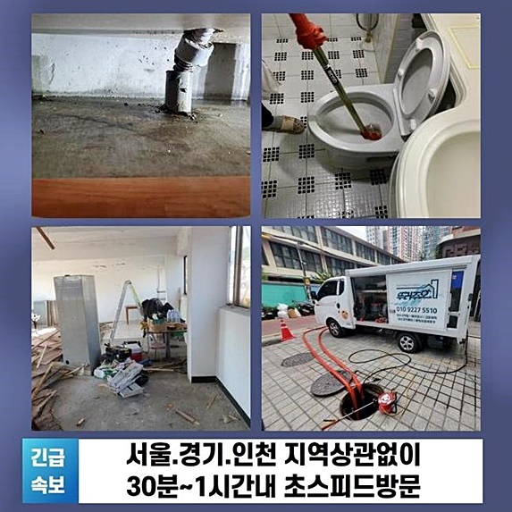
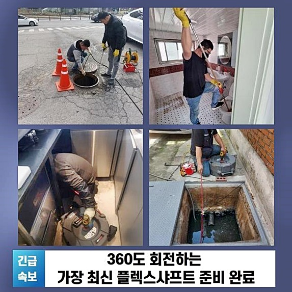
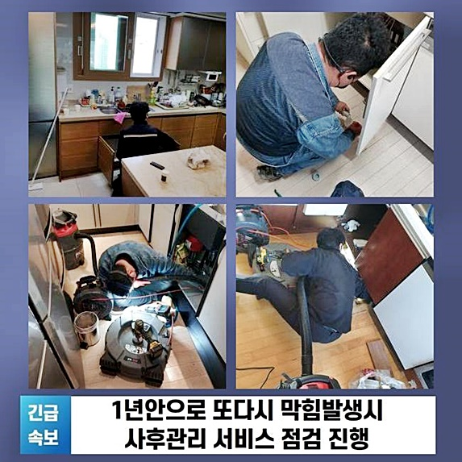
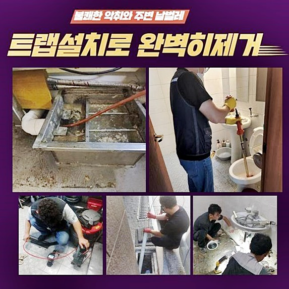
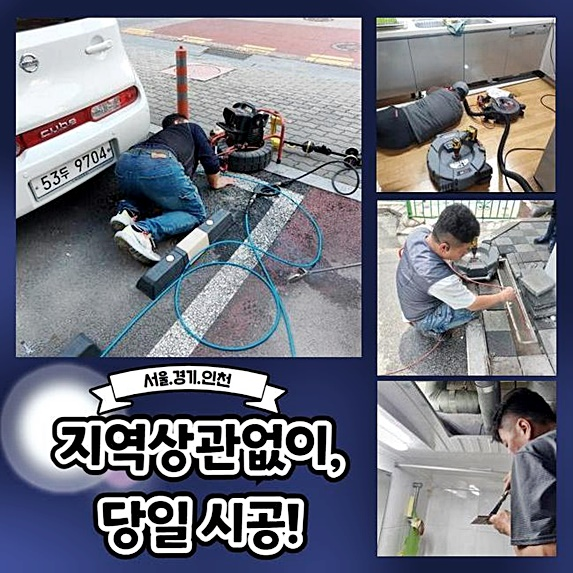
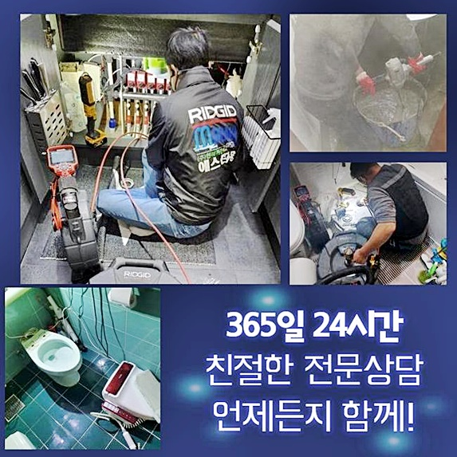

🏠 용산 청파동씽크대역류 보광동 고압세척비용 설비공사
용인 싱크대막힘 전문 시공 후기

📋 작업 개요
- 위치: 용인
- 서비스 유형: 싱크대막힘, 하수구막힘, 배관막힘, 역류해결, 배관청소, 고압세척, 설비공사
- 작업 일시: 2024. 9. 15. 11:42
- 업체명: 하수구수사대 (010-5615-2118)
🔍 문제 상황
용산 청파동씽크대역류 보광동 고압세척비용 설비공사
대개 건물들엔 여러 시설물이 존재합니다 이것들 중에 큰 비중을 차지하는건 하수관련 시설물이에요
물사용이 안되는 건축물들이 없는것처럼 건물에는 배수를 책임지는 배관들이 적절히 자리잡고 있어야 하는데요
만에하나 잔해물들이 하수관로로 빠져서 배수 길이 막히면 여러방면에서 번거로움을 느끼실텐데요
이러한 까닭으로 통수오류가 수면 위로 떠오르면 곧장 고쳐내야 하겠습니다
반대로 밖에서 볼 때 이물들이 얼만큼 자리하는건지 관찰할 수가 없어요
더 나아가 양상도 특정하는게 불가합니다
장비없이는 전문가여도 완벽한 청소들을 실시해주는게 어렵습니다
이러한 특징으로 인해서 전문성이 떨어지면 걷잡을 수 없게 됩니다
그럼에도 불구하고 최근 무분별하게 작업을 진행하려는 고객들도 여럿 있어요
영상 플랫폼들이 퍼지며 물빠짐 사고의 조치들이 우후죽순 생겨났죠
이런까닭에 압축장비나 클리너들을 어떤 방식으로 써야되는지 인지할 수 있습니다
반대로 전체 위와 같이 해결될 순 없어요
그도 그럴것이 내측의 이유들을 살피지 않아서 입니다

🔎 원인 분석
💡 전문가 진단: 정밀 진단 장비를 사용하여 슬러지의 고착 여부를 판명하고 타격/세척 작업을 실시했습니다.
예상치 못한 이물이 존재할 수도 있고 음식물 찌꺼기 등이 안쪽까지 잔존해 문제가 되었을 수 있어요
그리고 음식이라던지 머리카락 덩어리들이 배관라인을 막아버리기도 하죠
그러므로 작업을 수행하고자 하면 전문적인 기기가 준비되어있어야 합니다
대표되는것이 내시경장치 일텐데요
내시경장치는 라인이 길게 늘어져있으며 끝자리에는 렌즈등과 조명등이 달려있는데요
위와같은 이유들로 육안 관찰이 어렵고 비좁아도 점검이 수월하죠
더 나아가 청소할 때도 내시경은 무조건적인 작용을 하는데요
장비의 사용이 부재되어 있다면 체계적인 계획없이 청소를 할 수도 있겠는데요
해당 이유로 일반인의 경우엔 이물들을 제거하는게 어려움의 연속으로 다가오죠
그러므로 클리너들을 통하는것에 그치겠습니다
그밖에 용도에 벗어난 도구들로 배수관에 또 다른 문제들을 가한다면 작업규모가 커지게됩니다
그 다음 기계는 셔프트장비입니다
샤프트기기의 운용 덕에 세척기간까지 줄이게되는데요
없애야하는 이물들을 목표하여 분쇄부분을 운용하기에 세척이 속행될 수 있습니다

🔧 작업 과정
해당 이유로 막혀버려 곤란함을 겪는 상황이 발생되어 전문진을 선별할 예정이시면 장치의 보유량을 봐보세요
선별할 때 그저 가격측면의 요소들만 추구하여 의뢰인을 설득하고자하는 전문가들도 종종 보입니다
경제적 지출도 물론 중요반대로 다른사항도 꼼꼼하게 살펴봐주세요
업체의 실력과 관련해 방법이 상이할 수 밖에 없고 과정에도 크고 작은 차이들이 나타나요
자가적으로도 통수는 이뤄질 수 있어요
트래펑 등을 쓴다면 간소한 증상을 걷어내는건 불가하진 않죠
하지만 문제들을 인지하고 수리하지 않은 사례가 많아 미래에 악취가 배수관에서 발생되죠
며칠전 내방한 장소는 노후된 연립빌라였어요
냄새들이 배수관으로부터 발생되었고 물도 배수되지 않고있다 설명하셨어요
반복하여 시도해보아야 알게 모르게 배출되므로 전체적으로 불편을 이루 말할 수 없는 상태라고 말하셨죠
내시경장비를 가용시켜 내부를 관찰하니 물티슈와 다양한 이물이 목격되었어요
원체 수압이 강하지않은 설비시설들로 생각했는데 굳어버린 잔해물들이 한번에 흘러가 집수시설로 빠지게하지 못한 상태였습니다
또한 심부쪽에는 머리카락 뭉치도 확인되었습니다
바로 석션기기와 샤프트도구를 꺼냈어요
하수관의 잔해물을 사라지게끔 하는 단계부터 시작했어요
최초에는 흡입기가 사용하기 좋은데요
통수를 시켜주고자 하면 양상을 확인하고 적당한 기기를 사용하는것이 옳은데요
1차 작업을 마치고 굳어버린 이물을 제거시키기위해 샤프트장비를 투입시켰어요
체인의 원심력으로 고착물들을 없애주었어요
그러나 조심해야 하는 사항이 있어요
운용이 제대로 안되면 하수구설비를 망가뜨릴 수 있어 경험에서 비롯된 장비들의 이용이 요구되요
저희의경우 배관해결사들로 이루어져있어서 사고들이 발생할 일은 없다고 보아도 무방하답니다
허나 혹시 모를 상황에서도 대응하고자 송출되는 화면들도 확인하고 있어요


✅ 작업 완료
샤프트장비로 흡착물 청소까지 수행하니 이전보다 배수라인이 트였는데요
최종적으로 작업들의 마무리를 위하여 검수를 거칩니다
해당 과정은 하수관에 청수를 부어주어 간소한 방식들로 관찰해요
이러한 테스트가 확실한 방식이고 배수 속도 저하의 문제들을 파악할 수 있는 절차로 반드시 실시하죠
한꺼번에 하수들을 배출하니 배수관으로 신속히 흘러가는것을 관찰하였으며 세척들을 끝맺었습니다
저희전문진들은 계시는 곳까지 어디가되었든간에 신속히 내방하니 배수관로에 오류가 발생되었을 경우 지금 바로 도움을 청해보세요! 친절하게 맞이할게요




⚠️ 주방 싱크대 배관 막힘 예방 수칙
- ✅ 기름기가 묻은 식기나 프라이팬은 설거지 전 키친타올로 반드시 기름때를 닦아내세요.
- ✅ 주기적으로 싱크대 개수대에 뜨거운 물을 가득 받아 한 번에 내려 배관 내부 기름을 씻어내세요.
- ✅ 배수구 거름망을 미세한 필터로 사용하시고 음식물 찌꺼기가 틈으로 새어 들지 않게 관리하세요.
- ✅ 베이킹소다와 식초를 뜨거운 물과 함께 일주일에 한 번씩 부어주면 배관 살균과 막힘 예방에 좋습니다.
💡 핵심 정리
- 확실한 장비 작업(내시경 점검 및 샤프트 스케일링)으로 원인을 뿌리 뽑습니다.
- 작업 후 1년 이내에 동일한 부위 재발 시 100% 무상 A/S 서비스를 보장합니다.
- 서울 · 경기 · 인천 전 지역에 24시간 언제든 긴급 출동할 수 있도록 항시 대기 중입니다.
❓ 자주 묻는 질문 (FAQ)
🚨 용인 싱크대막힘 문제로 고민이신가요?
정확한 원인 진단과 확실한 시공으로 재발 없는 해결을 약속드립니다.
24시간 긴급 출동 | 서울 · 경기 · 인천 전지역 | 1년 내 재발 시 무상 A/S